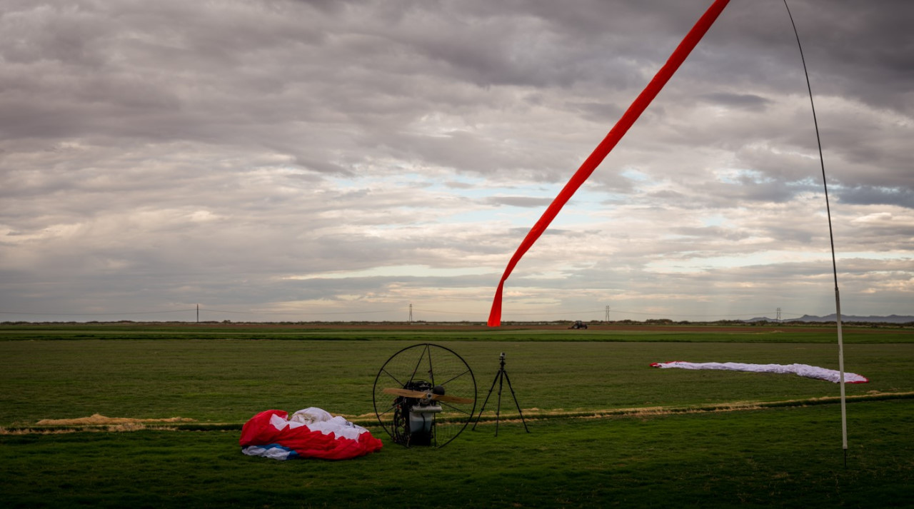

SOUTHWEST AIRSPORTS
paragliding training center - PASA certified
Santa Teresa, New Mexico -- El Paso, Texas
Santa Teresa, New Mexico -- El Paso, Texas
Explanations of the tools below and more weather info
Intro to Weather in the southwest
El Paso National Weather Service - start here!
Meso West Region (Current conditions at stations in the SW - view profile without logging in)
Santa Teresa NWS (current conditions)
SPC Balloon Soundings (every 12 hours)
UoW Balloon Soundings - usually available before the SPC soundings 72364
OP40 balloon sounding forecast - Santa Teresa, NM
OP40 balloon soundings forecast - any location
NWS hourly graphical forecast - temp, winds, & gusting at the surface
El Paso US Airnet winds - temps aloft
NOAA Satellite image of clouds over west Texas - NM
National forecast of fronts, pressure & weather - easy to read
Soaring Forecasts - (go here for the thermal index)
Dixon White's Notes on Desert Flying (courtesy of Eagle Paragliding)
Wind Map #1 - animated map of winds and other data over the surface of the world.
Wind Map #2 - this animated map loads faster but is the US only
Wind History Map - actual vs. forecasts
SkyVector Aeronautical Chart - road maps of the sky including TFR's
Contact us to schedule/confirm if you want to train at the sod farms or fly our area sites.
All training is 100% dependent on weather conditions. Before coming out, check your email and the web site to be sure training is not canceled. If something comes up, we will attempt to contact scheduled pilots. We usually train at sod farm #4. Training times can vary because of weather or equipment issues. Pilots can always arrive earlier than the scheduled times to study the weather, setup, and practice kiting.
Check out our featured video and introduction to paragliding from the National Geographic website. Fly like a bird!
Most countries love adventure sports like hang gliding and paragliding. Switzerland, for example, even put an image of a guy paragliding on their 50 Franc note. The Texas Parks and Wildlife Department has opened the doors of Texas parks to USHPA pilots. Other public land administrators in the U.S. should do the same.
Today was a BIG BONUS DAY for paragliding in the southwest New Mexico desert. It started first with a (legal) predawn flight by yours truly (Had Robinson) to pre-flight the air for (2) tandem flight lessons that were to occur shortly after dawn at the sod farms in Santa Teresa, NM. Flying in the air when the sun is not around so much is always some of the great magic we have as aviators. Armed with a strobe, I took off 30 minutes prior to sunrise, the earliest I could be in the air according to FAA regulations. Without the sun heating the surface of the earth, the winds under 100' AGL are similar to those above cloudbase -- unusually smooth. Today, the winds from 0-500' AGL were SSW at around 7 MPH which are perfect for flying tandem. When they are under 3-4 mph, the launch run can be 50-100 yards which, for new tandem students, can be a challenge.
Looking up at the moon peeping through some of the clouds that had been streaming in most of the night.
The first tandem flight of the day was with Bryce Jorgensen of Las Cruces, New Mexico. Bryce wanted to discover, first hand, what actually flying a paraglider is like. We had a perfect (and short) take-off and were able to tour the area, including flying right along the U.S. - Mexico border. Bryce was able to take the controls for much of the flight and get a feel for what it's like to fly this huge airship. Everything happens slowly. Because of the huge wingspan, tandem wings are more immune to disturbances in the air (but since the air was smooth, it didn't matter anyway). Among the highlights of the flight was a just-off-the-surface fly-by of the launch area. Bryce's son, Caleb, was able to witness was the safe fun we can have in the slow moving paraglider, the slowest moving airfoil in the world.
Having more fun than a couple of guys are allowed to have. The device velcroed to the tandem bar on my right is a variometer. This gadget tells the aircraft's vertical speed. The higher you get, the harder it is to tell whether you are moving up or down. The road below is Highway 9, one of the longer roads in the U.S. that has no crossroads, no power lines, no cell service, no buildings, no one-eyed guppies, etc. It is of no relation to Highway XXX. Photo by Bryce Jorgensen.
The next tandem of the day was with Caleb Jorgensen, age 12, son of Bryce. Caleb is the youngest tandem student I have had to date. He had the advantage of watching his dad do the launch run and take-off, so, being an observant and smart lad, it was a piece of cake for him to do just what his dad did: push as hard as possible on the tandem bar and run like a madman across the sod farms. Being about 60% of the weight of his senior, our launch was relatively quick and easy. In fact, I think we ran about 30' and that was it!
The view of our magnificent airship while looking up during a tandem flight.

Caleb and I just before launch. It is always important to do the pre-flight check, as I am doing here. Sport aviation is often forgiving of mistakes and neglect but never often enough.... Caleb is gripping the tandem bar, ready to push -- and help launch -- us into the air. Caleb got special permission to miss a bit of school this morning for some air sports adventure. I can here the conversation after he returned to school. Teacher: "Well, what were you doing this morning that you had to miss class?" Caleb: "Oh, I had a foot launched powered paragliding lesson. Flying sure is fun...." Or something like that. Photo by Bryce Jergensen.
We hope to have some videos of these flights shortly which I will post.
Record high tow on Hwy XXX
The next adventure of the day (!) was the record-setting high tow on Hwy XXX by intrepid pilot Buzz "Fly-High" Nelson. Over the years, there were various factors that prevented pilots from getting towed above 9K' MSL. Chief among these was the amount of line on the Southwest Airsports Magnum Winch. Another was the wear and tear on the line from towing up sacks of potatoes at the sod farms and then having the owner of the place tangle up the line while plowing with one of his tractors (what am I supposed to say?). Still another is the level of anxiety the pilot feels when he sees the tow line going off into space, unable to see what it is attached to (the winch and the truck get smaller and smaller as the glider gets higher, eventually becoming too small to see.)
Of course, the reverse is true. The tow operator loses complete visual of the glider. However, this does not matter because the winch hydraulics make a distinctive sound per the speed and tension of the line coming off the drum. The top of the winch mast points in the direction of the glider. Any mishap or non-normal behavior of the glider is immediately evident at the winch end. It is a sensitive system -- so sensitive that I, the tow operator, can tell when the glider passes through layers of air of slightly different directions and speed. When the glider hits a thermal and start so to go up, the excitement at the winch is the same as the pilot's in the sky.
Buzz setting up his equipment before his record tow into the southern New Mexico sky. It gets colder the higher you go so you must be prepared with gloves and adequate clothing. The towline and drogue parachute are visible in the foreground. If there is a line break at 10,000' and the drogue goes drifting off for miles and miles, how do we find it? Unless you are following the flight in a chase aircraft (done that), one can spend many hours scouring the desert for a wad of orange cloth. What is the answer? I created a padded pouch in the front of the drogue which holds a SPOT satellite communicator. Problem solved. The SPOT transmits every 10 minutes so, even if the batteries were to go dead, we would have a track we could follow.
Buzz starting out on his record tow. In the background are the XXX Mountains. On the back of the winch, I keep a paramotor just in case I need to go searching for a downed pilot who does not know or did not communicate his coordinates before going in.
Buzz just before releasing from tow at over 10,000' MSL. The glider is a tiny speck in the sky -- invisible. I only found him by blowing up the photograph and searching in the vicinity of the winch line going up to wherever. It was late in the day and Buzz gave it a yeoman's try to stay up in the weakening lift. He did very well and had about an hour flight in the pleasant afternoon air working the thermals below the many clouds in the region..
I was actually able to wind in the miles of towline, stow all the winch gear, and launch myself while Buzz was still in the air. It was getting quite dark (just after sunset) when I took this photo a minute after Buzz had landed at the abandoned racetrack on Hwy XXX.
CONGRATS, BUZZ, ON DEMONSTRATING TRUE GRIT AND BREAKING THE TOW HEIGHT RECORD FOR SOUTHERN NEW MEXICO (and probably all of New Mexico and west Texas, as well). He is now a member of the "10K Tow Club"!
Buzz Nelson and I (Had Robinson) can't get enough air time so we went out to Anapra in the afternoon. It was the usual para-wait and wait and wait. Winds were gusty, sometimes hitting in the low 20's. What was driving all this gusty high speed air? Right at sunset things calmed down a bit and I decided to launch. Right off launch the air was cross and things out front were going up and down. I stayed away from the hill because of the turbulence -- you do not want to have anything happen near the terrain. A half hour after sunset things started to calm down a tiny bit and I decided to put the glider down so I would not have to hike up the hill in loose sand. I was able to do a side-hill landing near the top. Buzz was watching me and decided to pack it up. It was amazing how a glider could stay up with the air so cross.
Sometimes Anapra is to die for -- today was not one of those days.
PPG pilot Ken Hunkus, tandem student pilot Holly Cobb, and yours truly (Had Robinson) got up extra early to get out to the farms before dawn. We were joined by Holly's husband, Bill, and her friend, David Guerin, a talented artist with a camera. He created this superb video of some highlights of our modest adventure today. Very nice work!
Why the early-bird time of day? I was hoping that the winds aloft would be steady and high enough to overcome the nightly changes and the effects of storms in the region. It was not to be. Winds aloft at dawn were NW and the surface winds were almost everything else. This means quirky air which is difficult to launch in. After dawn, the winds switched to NE (still NW) at altitude) and became stronger. Radar did not show any serious hazards in the area so I went up for a test flight. Far to the northeast (the Tularosa Basin) it was evident what was pushing the air our way: a front was moving in and I could see it from the air. I contacted Marilyn by radio and had her confirm what it was with a call to our friends at the National Weather Service. The white mist/haze of the front was moving our way with higher winds so it was best to land ASAP.
Since dawn, the windsock moved almost completely around the clock -- a bad sign for ultralight pilots. Ken was considering a launch but eventually bagged it. I was able to catch a window of NE air and get up but it was a short flight as i could feel the air changing.
There were many reasons not to fly today. Nonetheless, the beauty of the sky at dawn was stunning. View is east with the Franklin Mountains in the background. Photo by David Guerin.
L-R David, Ken, and Holly. It was starting to blow. Even staying on the ground is training -- sometimes hard to believe but deciding not to fly is more important than taking the least chance with our loco desert air.
It is easy to see why it is much safer to train at the sod farms. We have plenty of room with nothing in the way. Photo by David Guerin.

Ken Hunkus and Heather Coulon were out at the farms early to do some PPG training. Keighley Hastings and yours truly setup to do a tandem. Winds, however, were light and variable which makes launching with a motor challenging. In the end, Ken was the only one to launch and fly. Keighley and I just could not successfully launch in the switchy air. Heather also decided that the air was not suitable and stayed on the ground. It was getting late in the morning so we all called it a day.
Ken getting a take on the air before launching.
Ever desiring the XC flight, Buzz Nelson did yet another high tow on Hwy XXX in the afternoon. Launching from our secret area, he had to brave somewhat light and variable winds (LVW) getting up under tow. It's the first 100' of climb-out that carries the most risk if the tow operator and pilot make serious errors and we are in LVW. Buzz' dogged goal of improving his skills through practice has a pay-out of an increase in confidence and skill when launching under tow. Today was to be a personal record for him, his best free flight ever according to his words after the adventure.
Buzz on his way high! The clouds were puffy today which is the telltale sign that thermals are more organized and constant = easier to find lift and go XC, as he did.
After disconnecting from tow, Buzz made a bee-line for lift in the cloud in front. Yours truly told him "Go where the lift is and then GO!" It is the policy of Southwest Airsports that if a pilot decides to go cross country into our vast desert wilderness, we will go pick him up wherever he lands. The issue is: where is he when he lands? It's not like we can follow a tiny speck in the sky for hours. Read on....
After Buzz had the best XC flight he has had to date, he had to land somewhere. Where did he go? Newer pilots, in the excitement of engaging air going up, often forget the "going down" part and that they must tell ground crew their GPS coordinates. We do have radio contact but only while the pilot is in the air. As Buzz was going in after his long and challenging fight, he gave physical descriptions of his area, "There's a cow pen over there..." Not helpful.
So where's Waldo? Ground to ground radio just does not cut it. What to do? This is desert wilderness so Southwest Airsports Search & Rescue has to kick in. Yours truly, the instructor and tow operator has to take to the air, establish radio contact, and get the coordinates, if possible. Thankfully, Buzz was able to conjure up the right screen and give them to me. I then enter them into my own instruments while up in the air, and fly to wherever he is and engineer a pickup at the nearest road, if there is one. This we were able to do. Most topo maps of the desert are both ancient and inaccurate. This is because demand for them is -- basically -- zilch. Blowing sand tends to cover roads, fences appear and disappear, county road authorities run out of money, etc. change the maps constantly. His loaded GPS might have given the shortest workable path to a highway but maybe not. As it always is, the shortest route is always visible from the air and I was able to identify a fence with a beaten path that went straight to the highway. I gave Buzz the particulars via radio from the air. A ranch road that was nearby was a much farther route to the highway. Striking out across the desert is not easy because hiking through deep sand is exhausting. Buzz was able to make his way to the highway and, one way and another, we all got back home safely.
Below, Buzz took this photo of my flyover of his location.
New PPG tandem student, Sandra Prieto, met yours truly (Had Robinson) just after dawn at the sod farms for her first lesson in paragliding. Winds were a bit weak so we did a lot of waiting until things firmed up. There is always a small risk of a failed launch in weak conditions. Thankfully, the risk is minor damage to the paramotor (netting, propeller tips, supports). We try to minimize this by sending up a balloon to see what the air 100' above the earth is doing. But desert air is what it is -- and there are never any guarantees of what it might do in a moment or two. To get some idea of what the air is up to, imagine (3) Tyrannosaurus Rex in a tropical rain forest having a contest over some fresh kill. You are a small rodent watching it all. Who will win? The air masses behave like the TR's. Which one will overcome the others? Like the rodent, you can only watch from a distance and hope there is as much distance between you and fray as possible. The next day, Keighley Hastings and I did our level best to launch tandem but the desert played one of its usual tricks on us, doing a massive 180 degree switch in air direction just as we were getting off the ground. The net result was that we piled in with some minor damage to the paramotor. But this is the gamble we take when the winds are like this.
Sandra and I found a good window and were able to launch. We had a delightful time in the early morning air and she was able to take the controls for a bit. We did some gentle turns and practiced flying straight towards an object. It's not as simple as it sounds because the air we are flying in is moving and the direction through the air is different than the direction towards some object.
New pilots are not used to having their arms above their shoulders and they rapidly tire. It takes dozens of hours in the air to stretch the joints so flying becomes more comfortable. Nice work Sandra -- especially in running hard in the right direction when we launched.
Why "Hwy XXX"? I promised the New Mexico State Police and the Dona Ana County Sheriff that I would not make public our world-class high-tow location, a public road located somewhere in our southwestern desert. Their concern is that one group of crazies using public roads to engage in extreme sports insanity is enough.... Suffice it to say, the general reputation of hang gliding and paragliding is akin to base-jumping off tall office buildings. For responsible, well trained, and safety conscious pilots it is a hopeless task to convince the public otherwise. We just go about our business quietly as we can while suffering outrageous insurance costs and continual site loss. Unless we emigrate to almost anywhere else, we will have to be content with the status quo and the few reckless fools who tarnish us all by their needless accidents, self promotion, and the American media which has as much regard for accuracy and truth as my cat has for stray dogs.
On the happy side :), Buzz Nelson continues to drive ahead relentlessly improving his skills by -- imagine that -- flying lots. No one becomes a better functioning pilot by looking at YouTube videos, reading, or contemplation. Like all sports, you must prepare, but you must actually practice. Buzz is determined to go XC and he is learning the ropes well. A pilot's skill level must become such that most flying is automatic (muscle memory). Only then can he sense the subtle changes in the air that are transmitted down from the tips of the glider, through the lines and risers, and to the hands and arms. Pilots at this level of skill have a quantum leap in their flying skills and the atmosphere becomes something quite different to them. Buzz is on this way.
Arriving at the secret launch area on Hwy XXX, we waited patiently for the winds to stabilize for the tow up. When things were safe -- away we went for a great adventure in the stellar air of the desert southwest!
Where's Waldo? Who cares -- but here's Buzz getting very high. When he releases from tow he will have options -- lots of them. It was getting late in the day so thermal strength was declining.
Off tow -- like I said, Buzz has options. How close do you get to clouds? It depends on what the atmosphere is doing. It's like getting close to the edge of a fast moving river: if you can swim well, you can get as close as you like. There is always lift near clouds that are actively growing.
Buzz took this exciting photo of this powerful storm over western Chihuahua State, Mexico -- an area south of the NM Boot Heel.

Pilots do not want to get directly under the big black bottomed clouds. It means they are towering and subject to overdevelopment. Photo by remote Android robot courtesy Dept. of Homeland Security.
Buzz just before touching down at the secret LZ out near the East Potrillo Mountains. The light spot is our RCLB (remotely controlled landing beacon). When everything gets dark, it provides light to guide us in. It was another exciting high tow in our desert southwest.
Thursday evening I was doing a test flight on some new equipment. I had noticed an outflow boundary on radar moving east from a collapsed cell 100 miles west of us. I called in and got the details -- it was not moving very fast, thankfully, so it meant that I could fly. However, it was massive. Here is a view of it while I was in the air. The white thing in the photo is a mass of moist air 100 miles long and a few miles thick moving along the ground at about 12 mph. It was more pronounced north of here about 40 miles. I landed a few minutes after taking this photo as I did not want to be in the air when it came through. Maybe it was moving 20 mph or more instead of around 12 because something/someone made a mistake? I did not want to find out. It was creepy (but not dangerous) being in the air and watching it move along the ground.
Here is what it looked like on radar. The crosshairs is where I am standing next to my truck at the sod farms in Santa Teresa, NM. Sometimes these things can be moving along at 40-50 mph -- and then it can be terrifying for anyone who is in an ultralight at the time. Imagine a 100 million tons of cold air dropping 3 miles down out of a cloud. That's what happened here but it was not as cold as it could be.
Buzz Nelson went for another try at beating his own and the regional record for tow height on Hwy XXX. He was able to climb out to 5,000'MSL but then the weak-link safety line broke. It sometimes happens when there is a sudden surge on the line. The hydraulic system pulls so gently and smoothly that we can use the lightest weak links -- and they sometimes break. He had another perfect launch and landing. We will try again in a few days!
Buzz on his way up. He only had to get 4,000' higher....
Another nice video grab from the tow of what the pilot sees. The truck out front eventually disappears.
The desert is a place of great contrasts. This includes great differences in the air that lies above it. I launched very early in the morning and, after I climbed out, looked west to the E. Potrillo Mountains. There I saw a line of clouds (really fog) close to the ground stretching for about 5 miles from east to west about half way out to the mountains. What was this? Overnight we had had some torrential rains out there and the ground was soaked. The air right above was full of moisture and, as is normal when the sun comes up, the ground heated a little and the moisture began to rise. The temperature of the air was about 69 degrees F. The moisture laden air rose ever so slowly and when the temperature of the air mass cooled to the dew point, mist-fogs-clouds formed. Here we had "cloudbase" that was at 500' AGL instead of at the usual 15,000' MSL or higher!
I hit full speedbar on my glider and headed out as I knew that much more heating by the sun would warm the air mass up enough so that the clouds-mist-fog would be reabsorbed. It was enchanting -- once more -- flying in this endless space in the desert mountains. Here is a 30 second video of flying near/through the mist.
Nothing is more breathtaking than getting really high in a paraglider. Local paragliding fanatic, Buzz Nelson, cannot get through a day or two without serious withdrawal symptoms from not flying. Being the local flight junkie, I am always happy to oblige. The tow we did today was a record tow for the area -- just a few hundred feet short of 10,000' MSL. With two miles of line on the winch, pilots can go up and up and up. With our next tow, we hope to break way over 10,000' MSL which should not be too difficult. There are only a handful of rigs in the U.S. that can hold this much line -- I was so fortunate to have gotten my hands on this rig from one of my master instructors, Ken Hudon-Jorgensen of Salt Lake City. I have done a lot of modifications to it, including increasing the engine size, adding more hydraulic filters, fine-tuning the controls, beefing up the special trailer I carry it on, etc.
Again, our New Mexico and Texas states are friendly to our operation. Our biggest concern is that people doing over 100 mph on Hwy XXX will see us. Ergo, I installed all kinds of flashing LED light-bars on my truck and the winch trailer. I also promised the authorities that I would not post the location of the Hwy on the web (here) lest we have 100,000 people showing up on Hwy XXX to tow -- you never know what can happen, especially in the upcoming elections.
Buzz had a perfect launch and tow to the record height. What a view he had -- and I am envious! The last time I had a view like that was at Valle de Bravo, Mexico where I thermalled up and up to almost 12,000' MSL. I was in the clouds -- I'll never forget it.
Buzz on his way up! The U.S. Border Patrol agents just love watching us -- we are so much fun compared to their regular job. Congratulations, Buzz, for your record!
The same view but from the pilot's perspective. It took Buzz a while to get used to towing. A paraglider under tow by a competent operator is in the safest configuration it can be. Collapses and stalls are impossible because of the physics. The only serious danger is the first few hundred feet of tow when lockout is possible. That is why tow operators must be properly trained.
At almost 10,000' MSL. Buzz is off tow at this time but when he was still attached he could not see my truck that was towing him. He is above every mountain within 70 miles of here and can see over them all. It is quite a view!
Pilot Jason Tilley and family were relocated to Ft Sill, OK so why not see what the flying potential is in a relatively virgin area of the country? So, Flightbabe1 & I made the trek to Ft Sill to visit family and do some site R&D.
Unlike the rest of the world, the U.S. Feds and a few other state governments (mostly west coast states) are controlled by the enviro-nazis. Their creed is, "Look -- but DON'T you DARE touch!" So, unfortunately, the Wichita Mountains National Wildlife Refuge is subjected to this extreme view. That is, the brochure for the Refuge states, "NO ANYTHING except looking." Paragliding, drone use, and hang gliding are specifically excluded. Forbidding drone use is understandable but soaring aircraft flights? There might be (10) flights a year from this 100 sq. mile park. Don't these anti-fun extremists know that soaring pilots cause next to zero impact on any area, especially compared to the tens of thousands of people tramping around on foot? Contrast the attitude of the Feds with that of the park and wildlife departments of New Mexico and Texas. Oh well....
The good news is that these extremists do not control the air space in the Refuge which means that we can PPG into the area and still soar its peaks and enjoy its beauty. We just cannot land/take-off there. The southwest corner of the Refuge has little wildlife because the very rocky steep terrain is difficult for any creature to navigate. It is also too close to hunting areas to be much use to the birds. But it is lovely for soaring humans! Jason and I got in some amazing lift near the peaks. More good news is that the prevailing winds are from the south and the peaks in the southerly part of the range have some southerly faces. Even better, we made some friends with some of the local ranchers who are happy to have us use their open fields for launching and landing. The local authorities and people were all very friendly to us.
View northeast of the granite mountains inside the Refuge. I took this photo from just outside the Refuge's southern boundary. There is only a few miles of the southern boundary of the Refuge that is accessible. The rest of the southern boundary is Ft Sill which is off limits both land and air. The mountains surround an immense bowl (visible in the distance) where elk and buffalo roam.
Jason and I are enjoying the immense lift caused by the laminar and high winds that blow over this area of the Plains.
This view is from above the friendly ranches in the area. Everything to the right of the road is Ft Sill and everything to the left is private land. The buildings to the right at the base of the mountains is a Fed boondoggle -- a defunct "Job Corp" work training site. I wonder how many tens of millions of our tax payments were wasted here? We would use it as a launching area but it is too close to the mountains. The effects on the air flow are dramatic when you get close to these rocks.
Buzz Nelson went where the weak at heart would not go: a hike 'n fly from the top of Mt Riley -- alone! He discovered what only a very select few know of how magical this isolated triage of small mountains can be. It is off the grid with no roads, power lines, buildings, etc. Congrats to his successful flight! We may lose access thanks to its now Monument status. It is such a battle in the U.S. to preserve our flying sites, even where, as here, we are the primary users. Go figure....
Time of day for this flight was near dusk. The view below is, obviously, to the west. The mountain in front is Mt Cox. It has never been flown probably because the hike to the top is about twice as difficult as to the top of Mt Riley.
The summit of Mt Riley. View is northeast. When it gets dark out here -- it is DARK. This means, pilots need to land when they are supposed to, as Buzz did.
Buzz Nelson caught the east winds just right late Wednesday for some soaring at our closest east facing site. Congrats!
The early morning (twilight prior to dawn) is the safest time to launch a tandem. the Pilot in command and the passenger can be assured that turbulence (especially near the earth's surface) will be minimal. There is also a much lesser chance of wind direction changing during the crucial climb-out that occurs the first hundred feet. Keighley Hastings of Las Cruces once again made the trek to the Gardiner Turfgrass farms in Santa Teresa. The temperature of the desert air at this time of day is in the low 70's -- almost cold. Keighley is planning to being PG training soon – we are looking forward to her being a part of our hang gliding and paragliding community here in south central New Mexico and west Texas.
Our launch was flawless. As we climbed out, we headed towards the chili pepper fields of the Rio Grande river valley. Once there, we did some chili-checking. After that, it was a tour down the Rio Grande River, a climb-out to way above the Valley, and then a power-off descent and landing back at the sod farms. A great morning of flying for us. Here is a 40 second YouTube of our traverse of the chili pepper fields.
New tandem PPG passenger, Iliana Hernandez, made it to the sod farms at dawn for a flight around the region. We traveled west, right along the U.S. Mexican border and then did some low/slow mesquite slalom through the desert. An enchanting morning for the passenger and the pilot in command (Had Robinson). Iliana is a senior majoring in biology at NMSU in Las Cruces, NM. For the first time ever, I saw some new type of small deer in the desert. At first, we thought it was a coyote -- but it had long ears! It also ran like a deer. An escapee? Who knows....
Iliana as passenger -- front row. In the far distance (+20 miles) are the East Potrillo Mountains. The road visible is Hwy 9.
Ken Hunkus, Jake Hendrickson, and I (Had Robinson) made it out to the sod farms near dawn to continue training. Jake and I did another tandem -- so much fun launching the Ozone Magnum II airship and exploring the monsoon air layers. Ken is just dogging this sport (PPG paragliding) and it shows. This morning, his first launch was perfect -- and in light winds, the hardest there is. He also nailed the LZ on his first try. Good work! We are so proud of our students at Southwest Airsports. Safety is our first consideration -- everything beyond that is extra.
Ken preparing to launch. There is a lot going on when a pilot launches with a paramotor....
Our training location, the Gardner Turfgrass farms in Santa Teresa, NM. (The foot in the photo belongs to Jake.)
 The content of this website is copyright © 2016 by Southwest Airsports, LLC. All Rights Reserved
The content of this website is copyright © 2016 by Southwest Airsports, LLC. All Rights Reserved
{kind=link}
{kind=link}